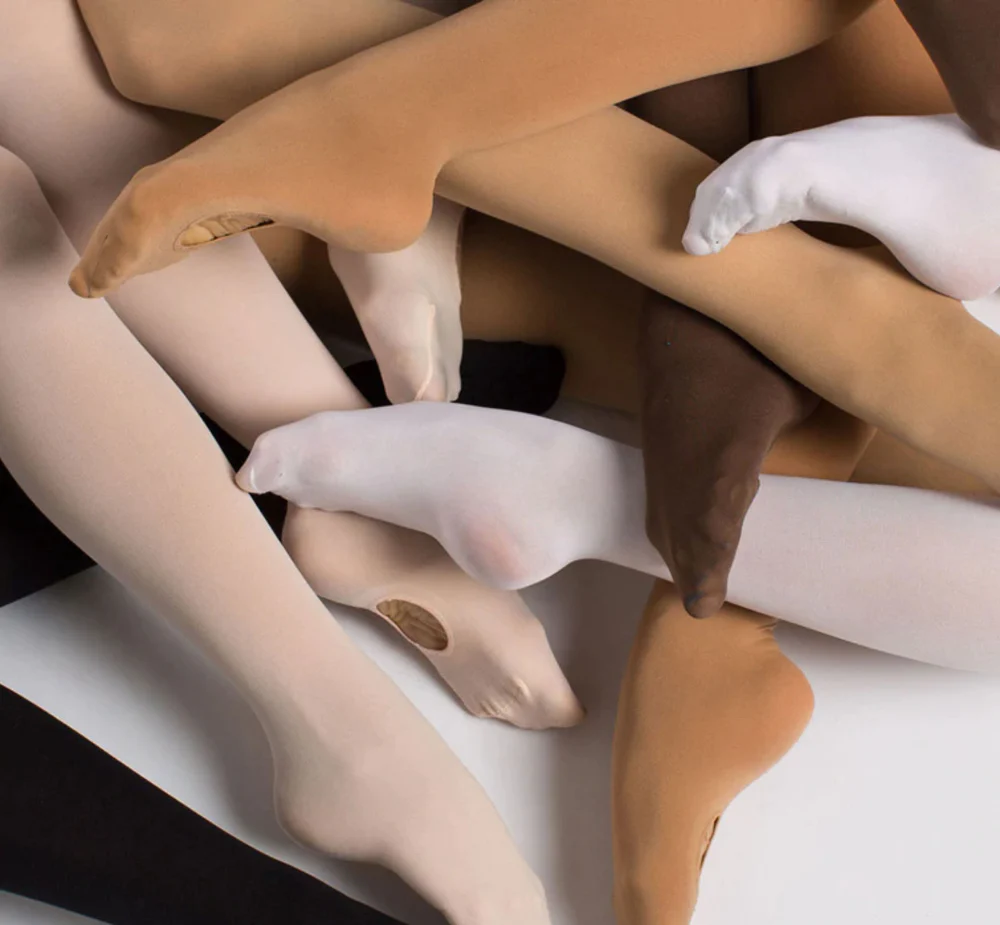

Ballet Boutique
Ballet Boutique
Todos los accesorios
Todo lo que a tí te gusta en un solo lugar

Bienvenido al mundo de la danza de élite con las zapatillas de punta Gaynor Minden, donde la innovación y la comodidad se encuentran en perfecta armonía. Diseñadas para bailarines exigentes que buscan lo último en rendimiento y apoyo, las zapatillas de punta Gaynor Minden representan un avance revolucionario en el mundo del ballet clásico. La tecnología avanzada de estas zapatillas no solo ofrece una durabilidad excepcional y una alineación mejorada, sino que también proporciona una sensación inigualable de comodidad desde el primer momento. Fabricadas con materiales de alta calidad y una caja innovadora, estas zapatillas permiten a los bailarines alcanzar nuevas alturas con confianza y gracia. Descubre la excelencia en cada giro y salto mientras te sumerges en el arte de la danza con las zapatillas de punta Gaynor Minden, donde el rendimiento y la comodidad se fusionan para crear una experiencia verdaderamente excepcional.
Sumérgete en la elegancia y la versatilidad con nuestros excepcionales can can de danza, diseñados para realzar tu rendimiento y elevar tu estilo en cada movimiento. En nuestra tienda, te ofrecemos una amplia variedad de medias de danza confeccionadas con materiales de alta calidad que abrazan tu figura con suavidad y elasticidad. Desde las clásicas medias de ballet hasta las modernas y expresivas, nuestras opciones de medias están diseñadas para satisfacer las necesidades de bailarines de todos los estilos y niveles. Experimenta la comodidad y el soporte adecuados para cada clase, ensayo o actuación, mientras destacas tu elegancia y profesionalismo. Ya sea que busques mallas con costura trasera o sin costura, en tonos clásicos o vibrantes, nuestras opciones de medias de danza son el complemento perfecto para tu vestuario. Descubre cómo cada par de medias no solo perfecciona tu apariencia, sino que también te brinda la confianza necesaria para brillar en el escenario. En nuestra tienda, la excelencia en la danza comienza desde los pies, y nuestras mallas están aquí para llevarte a nuevos niveles de gracia y estilo.
Medias de Danza Gaynor